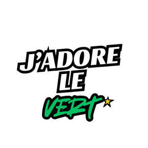

Trade Mark Journal No.2025/024 13 June 2025
UK00004198502 3 May 2025 (9,18,25,35)
Mark 1

Mark 2
- Class 9
- Fashion sunglasses; Sports eyewear; Fashion eyeglasses; Eyewear.
- Class 18
- Bags for sports clothing; Holdalls for sports clothing; Fashion handbags.
- Class 25
- Clothing; Knitwear [clothing]; Jackets [clothing]; Ready-to-wear clothing; Woolen clothing; Furs [clothing]; Layettes [clothing]; Clothing layettes; Linen clothing; Headbands [clothing]; Headbands for clothing; Gloves [clothing]; Gloves as clothing; Clothes; Kerchiefs [clothing]; Jerseys [clothing]; Denims [clothing]; Shorts [clothing]; Cashmere clothing; Capes (clothing); Oilskins [clothing]; Gabardines [clothing]; Silk clothing; Leather clothing; Clothing of leather; Leather (Clothing of -); Collars [clothing]; Parts of clothing, footwear and headgear; Veils [clothing]; Knitted clothing; Windproof clothing; Hoods [clothing]; Embroidered clothing; Wristbands [clothing]; Bandeaux [clothing]; Belts [clothing]; Belts for clothing; Rainproof clothing; Casual clothing; Waterproof clothing; Visors [clothing]; Jackets being sports clothing; Jackets (Stuff -) [clothing]; Stuff jackets [clothing]; Playsuits [clothing]; Bottoms [clothing]; Ready-made clothing; Clothing for leisure wear; Trunks being clothing; Woven clothing; Drawers [clothing]; Drawers as clothing; Leisure clothing; Clothing for sports; Sports clothing; Ties [clothing]; Athletic clothing; Muffs [clothing]; Bodies [clothing]; Tops [clothing]; Water-resistant clothing; Pockets for clothing; Weatherproof clothing; Fabric belts [clothing]; Handwarmers [clothing]; Beach clothing; Chaps (clothing); Thermal clothing; Men's clothing; Fishing clothing; Mitts [clothing]; Sportswear; Menswear; Quilted jackets [clothing]; Foulards [clothing articles]; Outerwear; Sports garments; Outer clothing; Casualwear; Sneakers [footwear]; Surfwear; Knitwear; Gymwear; Casual footwear; Loungewear; Footwear; Denim jackets; Footwear for sport; Footwear for use in sport; Footwear for sports; Sports footwear; Sneakers; Denim jeans; Swimwear; Athletic footwear; Leisurewear; Fashion hats; Shoes for leisurewear; Beachwear; Denim pants; Footwear for men; Footwear for women; Basketball sneakers; Beach footwear; Coats of denim; Denim coats; Gloves for apparel; Men's underwear; Athletics footwear; Leisure footwear; Uppers for Japanese style sandals; Fishing footwear; Japanese traditional clothing; Footwear uppers; Uppers (Footwear -); Boardshorts; Clothes for sport; Footwear not for sports; Casual jackets; Japanese style clogs and sandals; Clothes for sports.
- Class 35
- Retail services connected with the sale of clothing and clothing accessories; Retail services in relation to fashion accessories; Business networking; Online retail store services in relation to clothing; Online retail store services relating to clothing; Online retail services for downloadable virtual clothing; Retail store services in the field of clothing; Online retail services relating to clothing; Online retail services in relation to downloadable virtual footwear; Online retail services in relation to downloadable virtual clothing; Online retail store services relating to cosmetic and beauty products; Online retail services for downloadable digital music; Online retail services relating to jewelry; Online retail services in relation to downloadable virtual handbags; Online retail services relating to handbags; Online retail services in relation to downloadable virtual headwear; Online marketing; Advertising the goods and services of online vendors via a searchable online guide; Online advertising; Online retail services relating to cosmetics; Online retail services relating to luggage; Online retail services relating to toys; Providing a searchable online advertising guide featuring the goods and services of online vendors; Online retail services in relation to downloadable virtual works of art; Providing a searchable online advertising guide featuring the goods and services of other on-line vendors on the internet; Online advertisements; Compilation of online business directories; Mail order retail services for clothing accessories; Online ordering services; Online retail services for downloadable and pre-recorded music and movies; Mail order retail services for clothing; Online advertising services; Mail order retail services connected with clothing accessories; Online business networking services; Online retail services for downloadable ring tones; Online advertising on a computer network; Retail services in relation to downloadable virtual clothing; Retail services in relation to downloadable virtual footwear; Retail of third-party pre-paid cards for the purchase of clothing; Online advertising on computer networks; Business information services provided online from a computer database or the internet; Administration of the business affairs of retail stores; Business information services provided online from a global computer network or the internet; Online ordering services in the field of restaurant take-out and delivery; Retail services in relation to downloadable virtual handbags; On-line advertising; Providing online marketplaces for sellers of goods and or services; Business management of wholesale and retail outlets; Providing searchable online advertising guides; Mail order retail services for cosmetics; Shop retail services connected with carpets; Retail services in relation to downloadable virtual headwear; Online community management services; On-line promotion of computer networks and websites; Provision of an online marketplace for buyers and sellers of downloadable digital image files authenticated by non-fungible tokens [NFTs]; Retail services in relation to clothing accessories; On-line advertising on a computer network; Arranging commercial transactions, for others, via online shops; Business information services provided on-line from a computer database or the internet; Online advertising via a computer communications network; Retail of third-party pre-paid cards for the purchase of multimedia content; Business management of retail outlets; Provision of an online marketplace for buyers and sellers of goods and services; Rental of advertising space on-line; Retail services relating to clothing; Marketing; Influencer marketing; Advertising and marketing; Advertising and marketing consultancy; Digital marketing; Business marketing consultancy; Marketing consultancy; Internet marketing; Promotional marketing; Marketing consulting; Product marketing; Advertising and marketing services; Advertising, marketing and promotional services; Advertising, promotional and marketing services; Marketing, advertising, and promotional services; Business marketing services; Advertising, marketing and promotion services; Marketing, advertising and promotion services; Marketing forecasting; Marketing services; Marketing research; Advertising copywriting; Financial marketing; Business marketing consulting services; Design of marketing surveys; Affiliate marketing; Distribution of advertising, marketing and promotional material; Advice in the field of business management and marketing; On-line advertising and marketing services; Providing marketing consulting in the field of social media; Development of marketing concepts; Promotion [advertising] of business; Marketing advice; Brand strategy services; Marketing analysis; Consulting services in the field of Internet marketing; Event marketing; Promotion, advertising and marketing of on-line websites; Marketing studies; Analysis of marketing trends; Marketing agency services; Targeted marketing; Trade marketing [other than selling]; Investigations of marketing strategy; Direct marketing consulting; Advertising, marketing and promotional consultancy, advisory and assistance services; Advertising services for the promotion of e-commerce; Advertising services to create corporate and brand identity; Business advice relating to strategic marketing; Consultancy services relating to advertising, publicity and marketing; Referral marketing; Brand creation services (advertising and promotion); Consultancy services in the field of affiliate marketing; Marketing research services; Marketing management advice; Consultancy relating to marketing; Creative marketing plan development services; Research services relating to advertising and marketing; Planning of marketing strategies; Developing promotional campaigns for business; Promotional marketing services using audiovisual media; Marketing advisory services; Database marketing; Direct marketing; Business advice relating to marketing; Marketing (Business advice relating to -); Providing advice in the field of business management and marketing; Copywriting for advertising and promotional purposes; Dissemination of advertising, marketing and publicity materials; Development of marketing strategies and concepts; Modeling for advertising or sales promotion; Marketing information; Business marketing consultation services; Design of advertising flyers; Consultancy regarding advertising communications strategy; Professional consultancy relating to marketing; Consumer profiling for commercial or marketing purposes; Marketing analysis services; Advertising and marketing services provided by means of social media; Modeling services for advertising or sales promotion; Consultancy relating to business advertising; Modelling for advertising or sales promotion; Business consultancy services relating to the marketing of fund raising campaigns; Providing business marketing information; Product merchandising; Design of advertising logos; Marketing services in the field of restaurants; Recruitment services for sales and marketing personnel; Graphic advertising services; Direct marketing services; Marketing plan development ; Marketing assistance; Consultancy relating to the organisation of promotional campaigns for business; Marketing services in the field of travel; Marketing research in the fields of cosmetics, perfumery and beauty products; Development of advertising concepts; Copywriting; Business advertising services relating to franchising; Advertising of business web sites; Marketing services in the field of web site traffic optimization; Advertising services for the literary industry; Strategic business consultancy; Marketing services relating to esports events; Digital advertising services; Planning services for marketing studies; Advertising; Consultancy relating to demographics for marketing purposes; Consulting services in the field of development of advertising concepts; Customer club services, for commercial, promotional and/or advertising purposes; Market research and marketing studies; Business management consultancy via the Internet; Advertising and marketing services provided by means of blogging; Organization of fashion parades for sales promotion purposes; Marketing in the framework of software publishing; Modelling and models for advertising or sales promotion; Marketing research and analysis; Marketing research or analysis; Business strategy services; Consulting services relating to marketing; Design of advertising brochures; Real estate marketing; Information or enquiries on business and marketing; Brand positioning services; Real estate marketing analysis; Consultancy and advisory services in the field of business strategy; Advertising and promotional services; Promotional and advertising services; Promotional advertising services; Organisation of customer loyalty programs for commercial, promotional or advertising purposes; Business promotion; Advertising planning; Market research for advertising; Design of advertising materials; Sales promotion using audiovisual media; Consultancy regarding advertising communication strategies.
J'ADORE LE VERT LIMITED